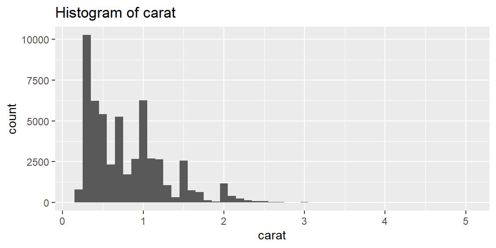

library(tidyverse)19 Basic programming I: functions and code style
Objectives
- Recognize why writing functions matters. Functions let you automate common tasks and extend your reach as a data scientist. Writing a function has four advantages over copy-and-paste: an evocative name, one place to update as requirements change, no copy-paste mistakes, and easy reuse on future projects. A good rule of thumb: write a function once you’ve copied and pasted the same code more than twice.
- Differentiate types of functions. Learn the three broad categories: vector functions (take one or more vectors, return a vector), data-frame functions (take a data frame, return a data frame or a summary), and plot functions (take a data frame, return a plot).
- Construct functions from repeated code. Identify what varies and what stays constant; choose a short, descriptive name, list the varying pieces as arguments, and wrap the repeated body in
function(). Test on simple inputs before using a function in a real pipeline. - Understand tidy evaluation and embracing. Writing a data-frame function that calls dplyr verbs runs into indirection: a bare argument name doesn’t work, because dplyr’s tidy evaluation looks for a column with that literal name. Use
{ }to tell dplyr to use the argument’s value instead, andpick()when the argument represents more than one column at once. - Write simple plot functions. Plot functions wrap ggplot2 code into reusable helpers; since
aes()is data-masking, you embrace variables passed into it exactly the same way.rlang::englue()can build a plot title that names the variable automatically. - Adopt good naming and style conventions. Choose function names that are verbs and argument names that are nouns; clarity beats brevity. Indent the body inside curly braces, and add spaces inside
{ }to make embracing visually obvious.
Notes
Why write functions?
Moving repeated code into a function is one of the most effective ways to reduce duplication and avoid errors. Writing a function gives the code a clear name, centralizes future changes in one place, eliminates copy-paste mistakes, and makes the logic reusable across projects. Whenever you find yourself copying and pasting the same code more than twice, that’s the signal to write a function instead.
Anatomy of a function
Turning repeated code into a function starts with identifying what changes and what stays the same. Every function needs a name, a set of arguments, and a body containing the repeated code. Rescaling a numeric vector to lie between 0 and 1 is a good first example:
rescale01 <- function(x) {
rng <- range(x, na.rm = TRUE, finite = TRUE)
(x - rng[1]) / (rng[2] - rng[1])
}
rescale01(c(-10, 0, 10))[1] 0.0 0.5 1.0This is the basic template: name <- function(arguments) { body }. finite = TRUE inside range() is doing real work here, not just tidying up; leaving it out changes the answer the moment an infinite value shows up (see Example 18.2).
Vector functions
A vector function takes one or more vectors and returns a vector of the same length, which is exactly the shape mutate() expects. A z-score function is a common example:
z_score <- function(x) {
(x - mean(x, na.rm = TRUE)) / sd(x, na.rm = TRUE)
}Because z_score() returns a vector rather than a data frame, it drops directly into mutate() on one column at a time, or across several columns at once with across() (covered next session).
Data-frame functions and tidy evaluation
A data-frame function takes a data frame, does something to it, and returns a new data frame or summary. The obstacle is that dplyr verbs use tidy evaluation: they interpret a bare name like group_var as a literal column name, not as “whatever column the caller passed in.” Writing the function the naive way fails as soon as you call it (see Example 18.1):
grouped_mean <- function(df, group_var, mean_var) {
df |>
group_by(group_var) |>
summarize(mean(mean_var))
}Embracing an argument with { } tells dplyr to substitute the argument’s value wherever it appears, rather than treating its name literally:
grouped_mean <- function(df, group_var, mean_var) {
df |>
group_by({{ group_var }}) |>
summarize(mean = mean({{ mean_var }}, na.rm = TRUE), .groups = "drop")
}
diamonds |> grouped_mean(cut, carat)# A tibble: 5 × 2
cut mean
<ord> <dbl>
1 Fair 1.05
2 Good 0.849
3 Very Good 0.806
4 Premium 0.892
5 Ideal 0.703Embracing works the same way whether the underlying verb is data-masking (filter(), summarize(), arrange()) or tidy-selection (select(), rename()); when you’re not sure which kind an argument needs, the function’s documentation will say.
Bundling a common set of summaries into one helper is a natural extension of the same idea:
summary6 <- function(data, var) {
data |>
summarize(
min = min({{ var }}, na.rm = TRUE),
mean = mean({{ var }}, na.rm = TRUE),
median = median({{ var }}, na.rm = TRUE),
max = max({{ var }}, na.rm = TRUE),
n = n(),
n_miss = sum(is.na({{ var }})),
.groups = "drop"
)
}Because summary6() just wraps summarize(), it works equally well on grouped data or ungrouped data, and it’s worth always adding .groups = "drop" inside a helper like this so it doesn’t leave surprise grouping behind for whatever code runs next.
Accepting more than one column: pick()
Embracing works cleanly for a single column, but passing several columns at once into a data-masking argument needs one more piece: pick(). Without it, a multi-column tidy-selection like c(cut, clarity) gets misinterpreted as a data-masking computation instead of a set of columns to group by (see Example 18.3 for exactly how that goes wrong).
count_missing <- function(df, group_vars, x) {
df |>
group_by(pick({{ group_vars }})) |>
summarize(n_miss = sum(is.na({{ x }})), .groups = "drop")
}
diamonds |> count_missing(c(cut, clarity), carat) |> head()# A tibble: 6 × 3
cut clarity n_miss
<ord> <ord> <int>
1 Fair I1 0
2 Fair SI2 0
3 Fair SI1 0
4 Fair VS2 0
5 Fair VS1 0
6 Fair VVS2 0pick() tells dplyr “treat this embraced argument as a tidy-selection of columns,” which is exactly what group_by() needs when the caller might hand it more than one grouping column at once.
Plot functions
Plot functions wrap repeated ggplot() calls the same way data-frame functions wrap repeated dplyr pipelines:
histogram <- function(df, var, binwidth = NULL) {
df |>
ggplot(aes(x = {{ var }})) +
geom_histogram(binwidth = binwidth)
}
diamonds |> histogram(carat, binwidth = 0.1)
aes() is data-masking, so embracing var works exactly the way it did inside summarize(). The plot this returns is an ordinary ggplot object, so a caller can still add more layers with + afterward. rlang::englue() goes one step further and builds a label that names the embraced variable automatically, which is a nice touch for a helper other people (including future you) will reuse:
histogram <- function(df, var, binwidth = NULL) {
label <- rlang::englue("Histogram of {{ var }}")
df |>
ggplot(aes(x = {{ var }})) +
geom_histogram(binwidth = binwidth) +
labs(title = label)
}
diamonds |> histogram(carat, binwidth = 0.1)
Naming a column dynamically
Sometimes you want the name of a new column, not just its value, to depend on an argument, such as labeling a computed average avg_carat when the caller passes in carat. A plain = can’t do this (see Example 18.4); dplyr’s := (“walrus”) operator, combined with unquoting (!!), can:
my_summary <- function(df, var) {
var_name <- paste0("avg_", rlang::as_label(enquo(var)))
df |> summarize(!!var_name := mean({{ var }}, na.rm = TRUE))
}
diamonds |> my_summary(carat)# A tibble: 1 × 1
avg_carat
<dbl>
1 0.798enquo() captures the argument as an expression, rlang::as_label() turns that expression into a plain string, and !! unquotes var_name on the left of := so dplyr uses its value ("avg_carat") as the new column’s name, rather than the six literal characters v, a, r, _, n, a… which is what a plain = would do instead.
Function style
Good naming and formatting make a function readable for whoever reads it next, including you. R doesn’t care about names or whitespace; people do. Prefer verbs for function names and nouns for arguments, since impute_missing() and collapse_years() communicate far more than f() or my_awesome_function(). Always follow function() with curly braces, indent the body consistently, and add spaces inside { } so embracing is visually obvious at a glance rather than easy to miss.
Fringe cases and common pitfalls
ExampleExample 18.1
Forgetting to embrace produces a specific, informative error, not a silently wrong answer.
grouped_mean_bad <- function(df, group_var, mean_var) {
df |>
group_by(group_var) |>
summarize(mean = mean(mean_var), .groups = "drop")
}
diamonds |> grouped_mean_bad(cut, carat)Error in `group_by()`:
! Must group by variables found in `.data`.
✖ Column `group_var` is not found.dplyr looks for a column literally named group_var, finds none, and says so directly: “Column group_var is not found.” This is a comparatively friendly failure, as function bugs go, precisely because it fails loudly right at the point of the mistake rather than quietly grouping by the wrong thing or returning a nonsensical summary. If you ever see an unexpected column name from inside your own function show up in an error message like this, forgetting to embrace an argument is the first thing to check.
ExampleExample 18.2
finite = TRUE in rescale01() isn’t decoration; leaving it out breaks the function the moment an Inf shows up.
rescale01_no_finite <- function(x) {
rng <- range(x, na.rm = TRUE)
(x - rng[1]) / (rng[2] - rng[1])
}
x <- c(1, 2, 3, Inf)
rescale01_no_finite(x) # every finite value collapses to 0[1] 0 0 0 NaNrescale01(x) # finite = TRUE keeps the finite values properly scaled[1] 0.0 0.5 1.0 InfWithout finite = TRUE, range() includes Inf as the maximum, so every ordinary value gets divided by a gap that’s effectively infinite, collapsing every one of them to 0, and Inf itself becomes Inf / Inf, which is NaN. With finite = TRUE, range() ignores the infinite value when computing the scale, so the three ordinary values rescale sensibly (0, 0.5, 1) and only the genuinely infinite input stays Inf. A single argument buried inside a helper function can be the difference between a function that degrades gracefully and one that quietly returns all zeros.
ExampleExample 18.3
Embracing more than one column directly, without pick(), fails with a confusing size-mismatch error.
count_missing_bad <- function(df, group_vars, x) {
df |>
group_by({{ group_vars }}) |>
summarize(n_miss = sum(is.na({{ x }})), .groups = "drop")
}
diamonds |> count_missing_bad(c(cut, clarity), carat)Error in `group_by()`:
ℹ In argument: `c(cut, clarity)`.
Caused by error:
! `c(cut, clarity)` must be size 53940 or 1, not 107880.{ group_vars } embraces c(cut, clarity) as a single data-masking expression, the same as it would for one column, but a data-masking expression is supposed to produce one computed vector, not “please group by these two separate columns.” The result is an internal length mismatch that has nothing obviously to do with the real problem. Wrapping the embraced argument in pick(), as in the working count_missing() earlier in this session, tells dplyr to treat it as a tidy-selection of columns instead, which is what actually fixes it.
ExampleExample 18.4
A plain = can’t compute a column name from an argument; it just uses your variable’s literal name as the column name.
my_summary_wrong <- function(df, var) {
var_name <- paste0("avg_", rlang::as_label(enquo(var)))
df |> summarize(var_name = mean({{ var }}, na.rm = TRUE))
}
diamonds |> my_summary_wrong(carat)# A tibble: 1 × 1
var_name
<dbl>
1 0.798The resulting column is named var_name, the literal name of the R variable on the left of =, not avg_carat, the string that variable actually holds. = inside a dplyr verb always takes the text written on its left as the new column’s name; it never looks at what a variable with that name currently contains. := behaves the same way unless you explicitly unquote the left-hand side with !!, which is precisely what tells dplyr “use the value of this variable as the name,” rather than the variable’s own name.
Recap
| Term | Definition |
|---|---|
| Vector function | Takes one or more vectors, returns a vector of the same length; drops into mutate(). |
| Data-frame function | Takes a data frame, returns a data frame or summary; needs embracing to accept column names as arguments. |
| Plot function | Takes a data frame, returns a ggplot object; embraces variables the same way inside aes(). |
Embracing ({ }) |
Tells a tidy-eval-aware verb to use an argument’s value, rather than treating its name literally. |
pick() |
Lets an embraced argument represent a tidy-selection of several columns inside a data-masking verb like group_by(). |
rlang::englue() |
Builds a string (such as a plot title) that automatically names an embraced variable. |
:= (walrus operator) |
Like = inside a dplyr verb, but its left side can be unquoted with !! to use a computed name instead of a literal one. |
finite = TRUE |
A range() argument that excludes Inf/-Inf from the computed range; leaving it out lets one infinite value distort an entire calculation. |
Check your understanding
NoteProblems
- What are the three broad categories of functions covered in this session, and what does each one take as input and return as output?
- You write
filter_by(df, col, val) { df |> filter(col == val) }(without embracing) and callfilter_by(diamonds, cut, "Ideal"). What happens, and how would embracing fix it? - Why does
rescale01(c(1, 2, Inf))behave differently depending on whetherrange()was called withfinite = TRUE? - A function accepts a
group_varsargument meant to represent one or more grouping columns, and callsgroup_by({{ group_vars }}). What goes wrong when a caller passesc(cut, clarity), and what one change fixes it? - Inside a function, you write
summarize(col_name = mean(x))hoping the new column will be named whatever stringcol_namecurrently holds. What actually happens, and what would you write instead?
TipSolutions
Vector functions take one or more vectors and return a vector of the same length, for use inside
mutate()orfilter(). Data-frame functions take a data frame and return a data frame or a summary, typically by wrapping a dplyr pipeline. Plot functions take a data frame and return a ggplot object, typically by wrapping aggplot()call.filter(col == val)looks for a column literally namedcol, which almost certainly doesn’t exist indiamonds, so it either errors immediately or, if a column happens to be namedcol, silently filters on the wrong thing. Embracing (filter({{ col }} == val)) tellsfilter()to use the actual column the caller passed in,cut, instead of the literal wordcol.Without
finite = TRUE,range()includesInfas the maximum, so the denominator becomes effectively infinite and every finite input collapses to0whileInfitself becomesNaN. Withfinite = TRUE,range()ignores infinite values entirely, so the finite inputs are scaled using only the finite range, and only the truly infinite input staysInf.{ group_vars }treatsc(cut, clarity)as a single data-masking expression rather than a selection of two separate columns, producing an internal length mismatch rather than grouping by both columns. Wrapping it asgroup_by(pick({{ group_vars }}))tells dplyr to treat the embraced argument as a tidy-selection instead, which correctly groups by every column named in it.The new column is named
col_name, the literal text of the variable’s name, because=inside a dplyr verb always uses the text on its left as the column name and never evaluates it. To use the actual string stored incol_nameas the new column’s name, use!!col_name := mean(x)instead, which unquotescol_nameso dplyr uses its value.